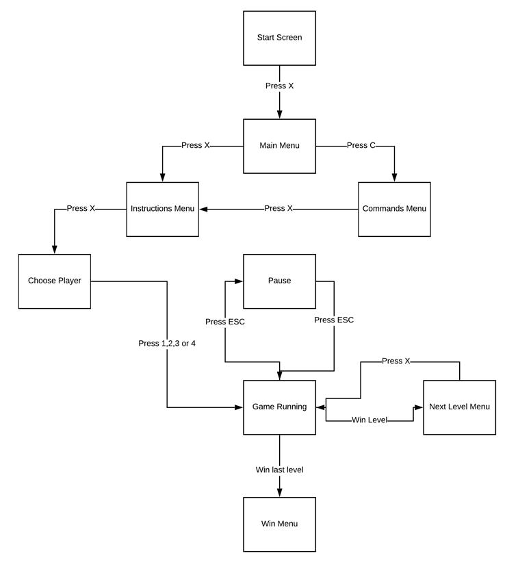

Com base na cadeira da Teoria da Computação, criamos um jogo utilizando um diagrama de estados para descrever as diferentes fases/menus do jogo.

O Fruta x Fruta foi desenvolvido em Python com duas das suas bibliotecas, o arcade e o pygame.
Usamos o Pygame para a implementaçao da música de fundo bem como alguns dos sons presentes no jogo
Em vez de usar o pygame para o projeto todo, obtamos por usar o arcade por ser mais dedicado a plataformas, o tipo de jogo que desenvlvemos.
Para fazer os diferentes Menus do jogo, utilizamos o Photoshop
Todos os mapas foram desenhados um por um, na aplicação Tiled, uma aplicação dedicada à criacão de mapas com camadas,
camadas estas que podem depois ser individualmente programadas permitindo a criação de obstáculos, inimigos, etc ..
Para a criação da Aplicação Web utilizamos o html / css com grids para a facil organização dos conteúdos.
Utilizamos o heroku para conseguir alojar a aplicação na web.
Utilizamos o Git para guardar o trabalho e facilitar o seu acesso remoto.
As sprites usadas neste projeto foram obtidas através do itch.io, clique aqui
A música de fundo utilizada foi escolhida do soundcloud, clique aqui
Os sons de apanhar a fruta, como morrer foram obtidos no zapsplat, clique aqui